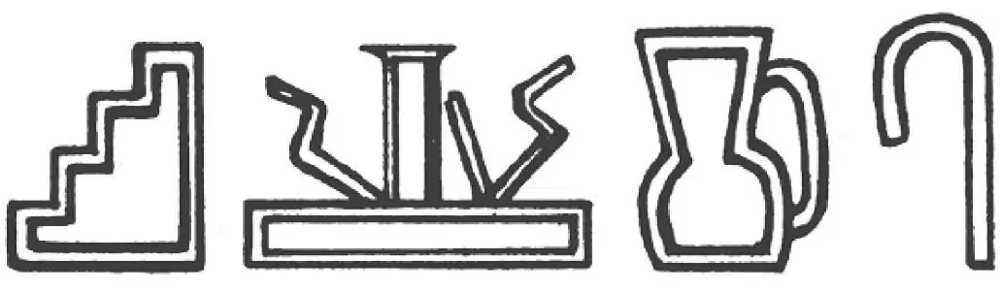
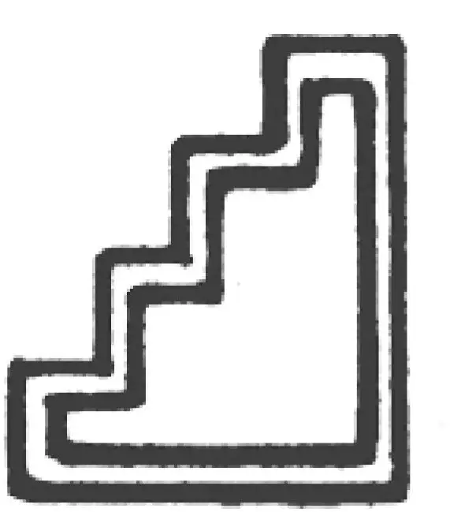
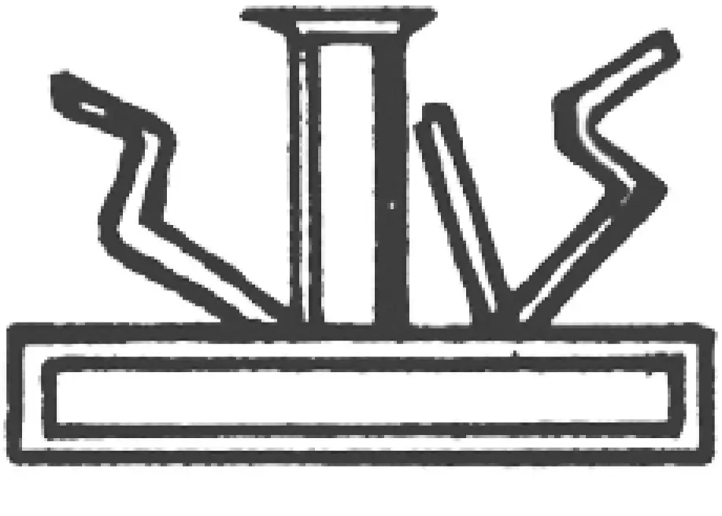
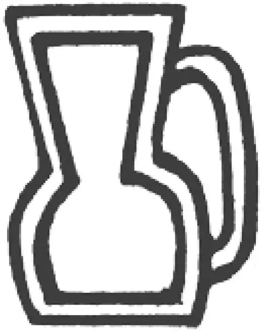
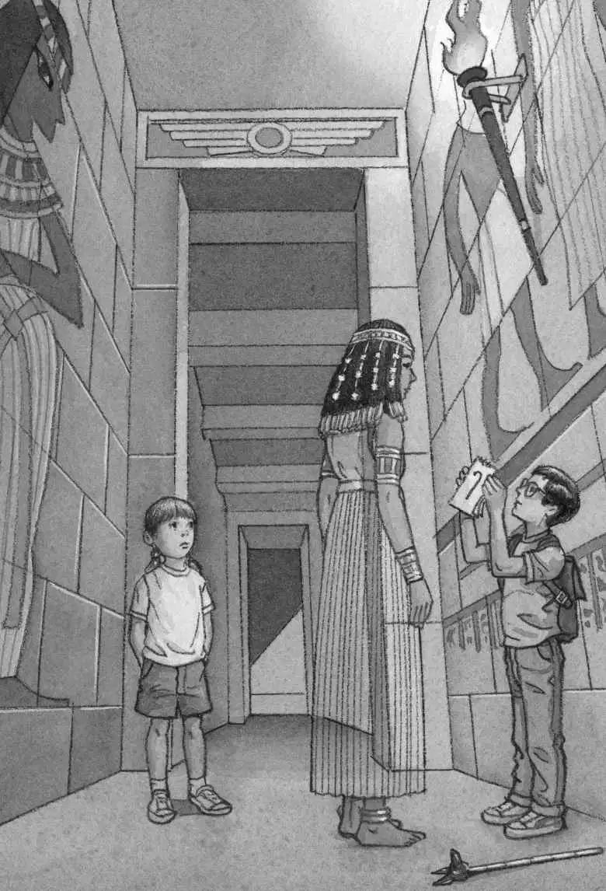
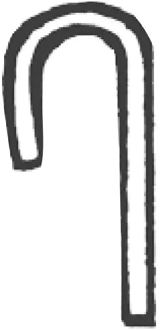
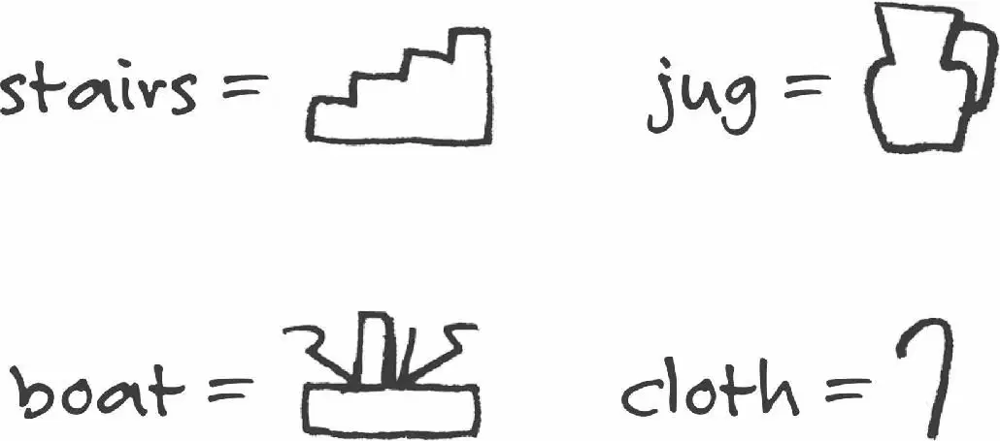

Jack and Annie squinted at the pyramid wall.
A series of tiny pictures was carved into the stone.

“There are four pictures here,” Jack told the ghost-queen.
“Describe them to me, Jack. One at a time, please,” she said.
Jack studied the first picture.

“Okay,” he said. “The first one is like this.” He made a zigzag in the air with his finger.
“Like stairs?” asked the ghost-queen.
“Yes, stairs!” said Jack. “Just like stairs.”
She nodded. That was easy enough, Jack thought. He studied the second picture.

“The second one has a long box on the bottom,” he said. He drew it in the air.
The ghost-queen looked puzzled.
“With three things on top. Like this,” said Annie. She drew squiggly lines in the air.
The ghost-queen still seemed puzzled.
“Like a hat,” said Jack.
“Hat?” said the ghost-queen.
“No. More like a boat,” said Annie.
“Boat?” said the ghost-queen. She sounded excited. “Boat?”
Jack took another look at the wall.
“Yes. It could be a boat,” he said.
The ghost-queen looked very happy. She smiled. “Yes. Of course,” she said.
Jack and Annie studied the next picture.

“The third one is like a thing that holds flowers,” said Annie.
“Or a thing that holds water,” said Jack.
“Like a jug?” asked the ghost-queen.
“Exactly,” said Jack.
“Yes. A jug,” said Annie.

Jack and Annie studied the last picture.

“And the last one looks like a pole that droops,” said Annie.
“Like a curved stick,” said Jack. “But one side is shorter than the other.”
The ghost-queen looked puzzled again.
“Wait,” said Jack. “I’ll draw it in my notebook. Big! So you can see it.”
Jack put down the scepter and got out his pencil. He drew the hieroglyph.
“A folded cloth,” said the ghost-queen.
“Really?” said Jack.
“Yes. That is the hieroglyph for a folded cloth,” said the ghost-queen.
“Oh. Okay,” said Jack.
He looked at the fourth hieroglyph again. He still couldn’t see the folded cloth. Maybe it was like a towel hanging over a bathroom rod.
“So that’s all of them,” said Annie. She pointed at each picture. “Stairs. Boat. Jug. Folded cloth.”
Jack wrote the words in his notebook.

“So what does the message mean?” he asked the ghost-queen.
“Come,” she said. She held out her hand. “Come to my burial chambers.”
And she floated away.